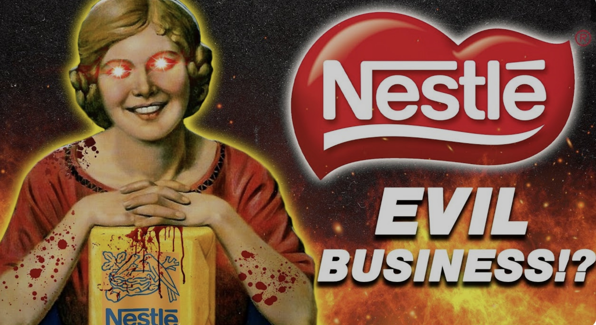

Nestle Baby killers
Nestle earned the nickname "baby killer" in the mid 1970s after repeated bad marketing practices that led to the death of many infants. While these started in the 1970s, these Nestle has continued to exploit customers in developing nations through their unethical marketing practices.
Resources
War on Want said this undermined women's confidence in breastfeeding.